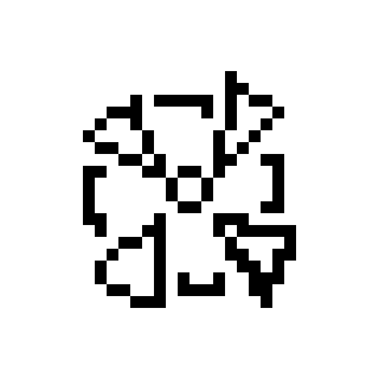

References
- Union of Concerned Scientists. (n.d.). Benefits of renewable energy use. Retrieved from https://www.ucsusa.org/resources/benefits-renewable-energy-use
- International Renewable Energy Agency (IRENA). (2016). Measuring the economics of renewable energy. Retrieved from https://www.irena.org/-/media/Files/IRENA/Agency/Publication/2016/IRENA_Measuring-the-Economics_2016.pdf
- Britannica. (n.d.). Renewable energy. In Encyclopaedia Britannica. Retrieved December 18, 2024, from https://www.britannica.com/science/renewable-energy
- National Geographic. (n.d.). Renewable energy. In National Geographic. Retrieved December 18, 2024, from https://www.nationalgeographic.com/environment/article/renewable-energy
click the fan to spin